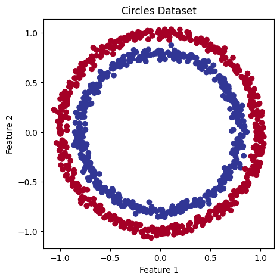
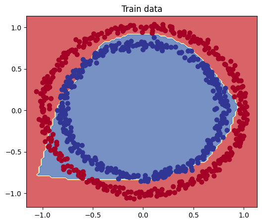
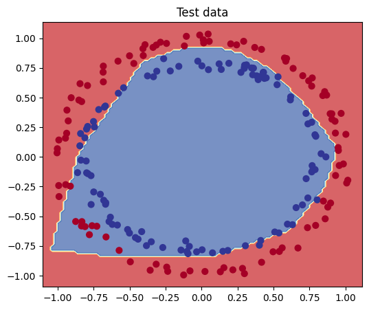
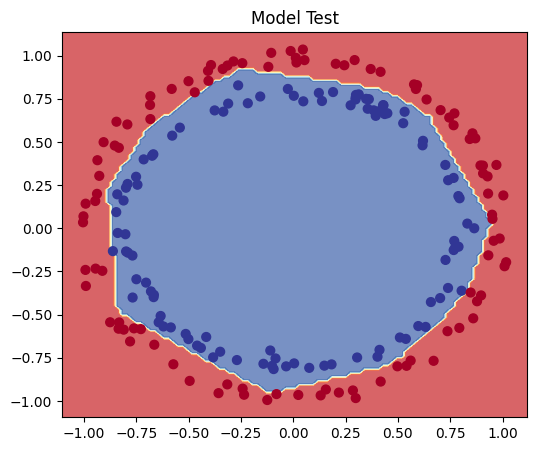
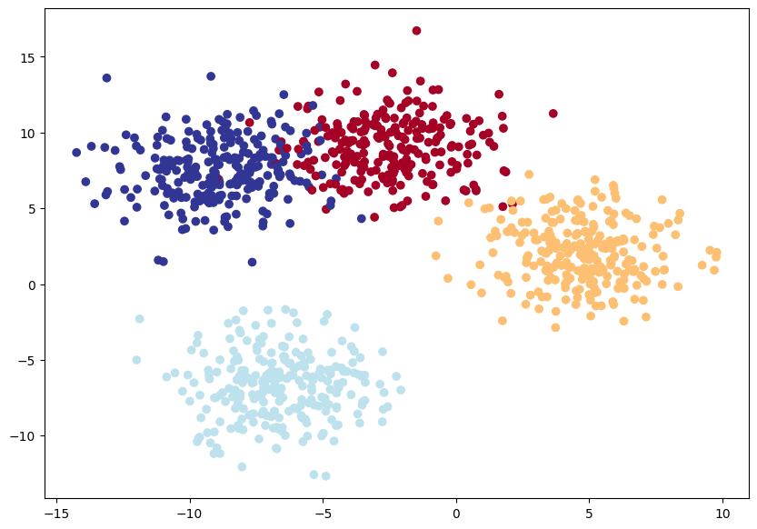
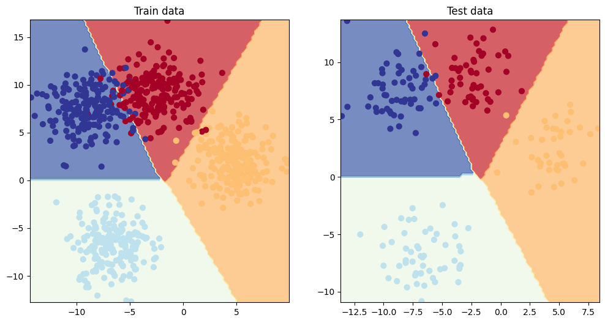

Code
# Import all the required modules
from sklearn.datasets import make_circles
from sklearn.model_selection import train_test_split
import numpy as np
import matplotlib.pyplot as plt
import torch
from torch import nnIn this project, we are going to explore how to use PyTorch to solve classification problems, specifically binary and multi-class classification problems. To achieve this, we will utilize the built-in datasets from the scikit-learn module and perform modeling using PyTorch.
We will follow these steps:
Let’s first look at the binary classification problem, and then move on to the multi-class classification problem.
To demonstrate the binary classification problem, we will use the make_circles() method from scikit-learn to generate two circles with differently colored dots.
Now, let’s explore our dataset.
# Check the dimensions of our features and labels
print(f"The dimension of feature X: {X.ndim}")
print(f"The dimension of label y: {y.ndim}", end = '\n\n')
# Check the shapes of our features and labels
print(f"The shape of feature X: {X.shape}")
print(f"The shape of label y: {y.shape}", end = '\n\n') # y is a scalar
# View the first example of features and labels
print(f"Values for FIRST sample of X: {X[0]} and the same for y: {y[0]}")
print(f"Shapes for FIRST sample of X: {X[0].shape} and the same for y: {y[0].shape}", end = '\n\n')
# Count no. of samples per label
unique_values, counts = np.unique(y, return_counts=True)
unique_counts_dict = {f'Label {val}': f'{count} samples' for val, count in zip(unique_values, counts)}
print(unique_counts_dict, end = '\n\n')
# View first five samples
print(f"First five X features:\n{X[:5]}")
print(f"\nFirst five corresponding y labels:\n{y[:5]}", end = '\n\n')The dimension of feature X: 2
The dimension of label y: 1
The shape of feature X: (1000, 2)
The shape of label y: (1000,)
Values for FIRST sample of X: [0.75424625 0.23148074] and the same for y: 1
Shapes for FIRST sample of X: (2,) and the same for y: ()
{'Label 0': '500 samples', 'Label 1': '500 samples'}
First five X features:
[[ 0.75424625 0.23148074]
[-0.75615888 0.15325888]
[-0.81539193 0.17328203]
[-0.39373073 0.69288277]
[ 0.44220765 -0.89672343]]
First five corresponding y labels:
[1 1 1 1 0]From the above results, we can see that there are 1000 samples of feature vector X with a dimension of 2 corresponding to 1000 samples of scalar label y with a dimension of 1. This means each pair of X features (say X1 and X2) has one corresponding label y, which is a scalar that is either 0 or 1. Therefore, we have two inputs for one output. Notice that we also have a balanced dataset, i.e., 500 samples per each label.
Now let’s visualize the dataset.

Now, let’s find out how we could build a neural network using PyTorch to classify the dots into red (0) or blue (1), given X1 and X2 (x-axis and y-axis in the above plot). But, before proceeding to build the PyTorch model, we must first convert our data into tensors and split it into 80% training and 20% testing datasets.
Number of training samples: 800
Number of testing samples: 200Now that we have our data ready, let’s build our model using PyTorch.
Since our data is not linearly separable, we will use a non-linear activation function such as ReLU in the model.
# Construct the model
class CircleModel(nn.Module):
def __init__(self, hidden_units=10):
super().__init__()
self.layer_1 = nn.Linear(2, hidden_units)
self.layer_2 = nn.Linear(hidden_units, hidden_units)
self.layer_3 = nn.Linear(hidden_units, 1)
self.relu = nn.ReLU()
def forward(self, x):
x = self.relu(self.layer_1(x))
x = self.relu(self.layer_2(x))
return self.layer_3(x)Now, let’s define train_and_evaluate() function to train and evaluate the model. This function trains the model for a specified number of epochs, computes training and testing loss and accuracy, and prints the results every 100 epochs.
The PyTorch training loop typically contains the following steps:
Forward pass - The model takes X_train as input, performs forward() function calculations, and then outputs raw prediction scores (logits) (y_logits = model(X_train).squeeze()). These logits are then converted into prediction probabilities by the sigmoid activation function. Finally, we round the probabilities to 0 or 1 according to the set threshold (here we use 0.5) to get binary predictions (y_pred = torch.round(torch.sigmoid(y_logits)).
Calculate the loss - The model’s outputs (predictions) are compared to the actual values and evaluated to see how wrong they are (loss_fn(y_pred, y_train)).
Zero the gradients - Clears the gradients of all model parameters, resetting them to zero. This is necessary because gradients accumulate by default in PyTorch (optimizer.zero_grad()).
Perform backpropagation - Performs backpropagation, calculating the gradient of the loss with respect to each model parameter (loss.backward()).
Step the optimizer (gradient descent) - Updates the model parameters using the gradients computed in the backward pass (optimizer.step()).
In the evaluation loop, we use testing data to evaluate the performance of the model by computing the model’s predictions (logits) on the test data, converting the logits to probabilities, and then to binary predictions, similar to the training loop.
def train_and_evaluate(model, X_train, y_train, X_test, y_test, loss_fn, optimizer, epochs, device='cpu'):
# Ensure the model is on the correct device
model.to(device)
# Move data to the device
X_train, y_train = X_train.to(device), y_train.to(device)
X_test, y_test = X_test.to(device), y_test.to(device)
for epoch in range(epochs):
## Training
# Forward pass
y_logits = model(X_train).squeeze()
y_pred = torch.round(torch.sigmoid(y_logits))
# Calculate loss and accuracy
loss = loss_fn(y_logits, y_train) # BCEWithLogitsLoss calculates loss using logits
acc = accuracy_fn(y_true=y_train, y_pred=y_pred)
# Optimizer zero grad
optimizer.zero_grad()
# Calculate the Loss
loss.backward()
# Optimizer step
optimizer.step()
## Testing
model.eval()
with torch.no_grad():
# Forward pass
test_logits = model(X_test).squeeze()
test_pred = torch.round(torch.sigmoid(test_logits)) # logits -> prediction probabilities -> prediction labels
# Calculate loss and accuracy
test_loss = loss_fn(test_logits, y_test)
test_acc = accuracy_fn(y_true=y_test, y_pred=test_pred)
# Print out what's happening
if epoch % 100 == 0:
print(f"Epoch: {epoch} | Loss: {loss:.5f}, Accuracy: {acc:.2f}% | Test Loss: {test_loss:.5f}, Test Accuracy: {test_acc:.2f}%")Since our dataset is a balanced dataset, in addition to the loss evaluation metric, we’ll also use the accuracy evaluation metric. Accuracy measures the proportion of correctly classified samples out of the total number of samples. We define a function called accuracy_fn() to perform this task.
Since we are doing binary classification, we can either use torch.nn.BCELossWithLogits or torch.nn.BCELoss as our loss function. Let’s use torch.nn.BCELossWithLogits for this simple problem as it has a built-in sigmoid activation and is also more numerically stable than torch.nn.BCELoss. As for the optimizer, let’s use torch.optim.SGD() to optimize the model parameters with a learning rate of 0.1.
Let’s first set up device-agnostic code and then instantiate the model.
# Set random seed for reproducibility
torch.manual_seed(42)
# Setup device agnostic code
device = "cuda" if torch.cuda.is_available() else "cpu"
# Instantiate the model
model = CircleModel().to(device)
# Setup loss function
loss_fn = nn.BCEWithLogitsLoss() # BCEWithLogitsLoss includes sigmoid
# Setup optimizer
optimizer = torch.optim.SGD(model.parameters(), lr=0.1)Now let’s train and evaluate the model using the above-defined train_and_evaluate() function for 1000 epochs.
Epoch: 0 | Loss: 0.69295, Accuracy: 50.00% | Test Loss: 0.69319, Test Accuracy: 50.00%
Epoch: 100 | Loss: 0.69115, Accuracy: 52.88% | Test Loss: 0.69102, Test Accuracy: 52.50%
Epoch: 200 | Loss: 0.68977, Accuracy: 53.37% | Test Loss: 0.68940, Test Accuracy: 55.00%
Epoch: 300 | Loss: 0.68795, Accuracy: 53.00% | Test Loss: 0.68723, Test Accuracy: 56.00%
Epoch: 400 | Loss: 0.68517, Accuracy: 52.75% | Test Loss: 0.68411, Test Accuracy: 56.50%
Epoch: 500 | Loss: 0.68102, Accuracy: 52.75% | Test Loss: 0.67941, Test Accuracy: 56.50%
Epoch: 600 | Loss: 0.67515, Accuracy: 54.50% | Test Loss: 0.67285, Test Accuracy: 56.00%
Epoch: 700 | Loss: 0.66659, Accuracy: 58.38% | Test Loss: 0.66322, Test Accuracy: 59.00%
Epoch: 800 | Loss: 0.65160, Accuracy: 64.00% | Test Loss: 0.64757, Test Accuracy: 67.50%
Epoch: 900 | Loss: 0.62362, Accuracy: 74.00% | Test Loss: 0.62145, Test Accuracy: 79.00%Ideally, the loss should steadily decrease to 0 while accuracy increases to 100%. However, we can see that although accuracy is steadily increasing, the loss remains almost stagnant. This may be due to the following reasons:
Difference between loss function and accuracy metrics:
Loss functions and accuracy metrics can respond differently to changes in predictions. For example, we are using nn.BCEWithLogitsLoss, which measures the difference between the predicted probabilities and the true labels, while accuracy simply counts the proportion of correct predictions. Accuracy is a more straightforward metric, reflecting whether predictions match the labels. In contrast, loss considers how confident the predictions are and penalizes incorrect predictions more if they are made with high confidence.
Prediction probabilities and thresholding:
To classify the data, our model is using a threshold of 0.5 to convert prediction probabilities into binary predictions. Therefore, accuracy may appear high if the model’s predictions are often very close to the threshold. However, the loss function still evaluates based on the exact probability values, which might not improve if the model’s confidence is misplaced.
Let’s plot the decision boundary of the model using both the train and test data to understand how well our model has learned.
A decision boundary is a line or a surface that separates different classes in a dataset. We’ll define plot_decision_boundary() function to plot the decision boundary for our dataset. It creates a grid of points covering the feature space, passes these points through the model to get predictions, and then plots these predictions along with the actual data points.
def plot_decision_boundary(model: torch.nn.Module, X: torch.Tensor, y: torch.Tensor):
"""Plot the decision boundary of a model's predictions on X against y."""
# Ensure model and data are on CPU
device = torch.device("cpu")
model.to(device)
X, y = X.to(device), y.to(device)
# Set up grid boundaries for plotting
x_min, x_max = X[:, 0].min().item() - 0.1, X[:, 0].max().item() + 0.1
y_min, y_max = X[:, 1].min().item() - 0.1, X[:, 1].max().item() + 0.1
xx, yy = np.meshgrid(
np.linspace(x_min, x_max, 101),
np.linspace(y_min, y_max, 101)
)
# Generate predictions for grid points
X_to_pred_on = torch.from_numpy(np.c_[xx.ravel(), yy.ravel()]).float().to(device)
model.eval()
with torch.no_grad():
y_logits = model(X_to_pred_on)
# Determine prediction labels based on problem type (binary vs. multi-class)
y_pred = (
torch.softmax(y_logits, dim=1).argmax(dim=1)
if y.unique().numel() > 2
else torch.sigmoid(y_logits).round()
)
# Reshape predictions and plot the decision boundary
y_pred = y_pred.reshape(xx.shape).cpu().numpy()
plt.contourf(xx, yy, y_pred, cmap=plt.cm.RdYlBu, alpha=0.7)
plt.scatter(X[:, 0].cpu(), X[:, 1].cpu(), c=y.cpu(), s=40, cmap=plt.cm.RdYlBu)
plt.xlim(xx.min(), xx.max())
plt.ylim(yy.min(), yy.max())

From the above diagrams, we can see that our model is underfitting, but not to the extent suggested by the loss value. For a loss value of around 0.6, we would expect about half of the points to be misclassified, but that’s not the case here. Therefore, the accuracy metric is more appropriate for evaluating the model.
Since our model is underfitting, we can improve the model in several ways, such as experimenting with different architectures, activation functions, or optimizers etc. As we have a simple problem to solve, let’s train it for another 1000 epochs and see what happens.
Epoch: 0 | Loss: 0.56818, Accuracy: 87.75% | Test Loss: 0.57378, Test Accuracy: 86.50%
Epoch: 100 | Loss: 0.48153, Accuracy: 93.50% | Test Loss: 0.49935, Test Accuracy: 90.50%
Epoch: 200 | Loss: 0.37056, Accuracy: 97.75% | Test Loss: 0.40595, Test Accuracy: 92.00%
Epoch: 300 | Loss: 0.25458, Accuracy: 99.00% | Test Loss: 0.30333, Test Accuracy: 96.50%
Epoch: 400 | Loss: 0.17180, Accuracy: 99.50% | Test Loss: 0.22108, Test Accuracy: 97.50%
Epoch: 500 | Loss: 0.12188, Accuracy: 99.62% | Test Loss: 0.16512, Test Accuracy: 99.00%
Epoch: 600 | Loss: 0.09123, Accuracy: 99.88% | Test Loss: 0.12741, Test Accuracy: 99.50%
Epoch: 700 | Loss: 0.07100, Accuracy: 99.88% | Test Loss: 0.10319, Test Accuracy: 99.50%
Epoch: 800 | Loss: 0.05773, Accuracy: 99.88% | Test Loss: 0.08672, Test Accuracy: 99.50%
Epoch: 900 | Loss: 0.04853, Accuracy: 99.88% | Test Loss: 0.07474, Test Accuracy: 99.50%Looks like our model has converged and we got the results what we wanted i.e. loss close to zero and accuracy close to 100%. Now, let’s visualize the decision boundary to see what’s hapenning.

The decision boundary plot also confirms that our model has improved.
Now that we have done with our binary classification, let’s move on to multi-class classification problem.
To demonstrate the multi-class classification problem, we will follow similar steps to those used in the binary classification problem above.
First, let’s import the required modules. We are re-importing most of the modules for the sake of completeness.
Now, we will use the make_blobs() method from scikit-learn to generate isotropic Gaussian blobs.
# Set the hyperparameters for data creation
NUM_SAMPLES = 1000
NUM_CLASSES = 4
NUM_FEATURES = 2
RANDOM_SEED = 42
# Create multi-class data
X_blob, y_blob = make_blobs(n_samples=NUM_SAMPLES,
n_features=NUM_FEATURES, # X features
centers=NUM_CLASSES, # y labels
cluster_std=2, # standard deviation of the cluster
random_state=RANDOM_SEED
)
# Count no. of samples per label
unique_values, counts = np.unique(y_blob, return_counts=True)
unique_counts_dict = {f'Label {val}': f'{count} samples' for val, count in zip(unique_values, counts)}
print(unique_counts_dict, end = '\n\n')
# View ten samples
print(f"Ten 'X' features:\n{X_blob[-10:]}")
print(f"\n Ten corresponding 'y' labels:\n{y_blob[-10:]}", end = '\n\n'){'Label 0': '250 samples', 'Label 1': '250 samples', 'Label 2': '250 samples', 'Label 3': '250 samples'}
ten X features:
[[ 4.17800978 3.36558241]
[-4.18864131 7.81550084]
[ 5.25548237 -1.4471671 ]
[-9.00985452 -7.490559 ]
[ 6.93842549 0.56681683]
[-2.75662004 -4.46337713]
[-1.26095799 10.27097715]
[ 2.74108106 7.23793381]
[-8.0986516 -7.2540522 ]
[-9.96266381 6.90507917]]
ten corresponding y labels:
[1 0 1 2 1 2 0 1 2 3]The above make_blobs() function generates a balanced dataset with 1,000 samples, 2 features, 4 centers (clusters), and a specified spread within each cluster (cluster_std=2). The random_state parameter ensures that the data is the same every time it’s generated.
Now, we will visualize our dataset.

Now, let’s prepare our data for modeling with PyTorch.
# Split the data into train and test sets
X_blob_train, X_blob_test, y_blob_train, y_blob_test = train_test_split(X_blob, y_blob, test_size=0.2, random_state=RANDOM_SEED)
# Number of training and testing samples
print(f"Number of training samples: {len(X_blob_train)}")
print(f"Number of testing samples: {len(X_blob_test)}")Number of training samples: 800
Number of testing samples: 200Now that we have our data ready, we will build our model using PyTorch.
Since our data appears to be linearly separable in the above plot, let’s use only linear layers in the model and see if it works.
class BlobModel(nn.Module):
def __init__(self, input_features, output_features, hidden_units=8):
super(BlobModel, self).__init__()
self.linear_layer_stack = nn.Sequential(
nn.Linear(input_features, hidden_units),
nn.Linear(hidden_units, hidden_units),
nn.Linear(hidden_units, output_features)
)
def forward(self, x):
return self.linear_layer_stack(x)Now that we have our model ready, we will define the train_and_evaluate() function similarly to how we defined it for binary classification. This function will train and evaluate the model, running for a specified number of epochs, computing training and testing loss and accuracy, and printing the results every 100 epochs.
We have already discussed the steps involved in training and evaluating PyTorch models in the binary classification problem. For multi-class classification, we need to adjust the function to accommodate the specifics of this problem, such as the forward pass and the use of different loss functions and optimizers.
In the forward pass, the model outputs logits (raw predictions), which are then converted to predicted labels using the argmax() function.
Here, we’ll use the nn.CrossEntropyLoss() method as our loss function. For the optimizer, we will use torch.optim.SGD() to optimize the model parameters with a learning rate of 0.1.
Additionally, we will use the previously defined accuracy_fn() function to evaluate accuracy.
def train_and_evaluate(model, X_blob_train, y_blob_train, X_blob_test, y_blob_test, loss_fn, optimizer, epochs=1000, device='cpu'):
# Ensure the model is on the correct device
model.to(device)
# Move data to the device
X_blob_train, y_blob_train = X_blob_train.to(device), y_blob_train.to(device)
X_blob_test, y_blob_test = X_blob_test.to(device), y_blob_test.to(device)
for epoch in range(epochs):
## Trainig
model.train()
# Forward pass
y_logits = model(X_blob_train)
#y_pred = y_logits.argmax(dim=1)
y_pred = torch.softmax(y_logits, dim=1).argmax(dim=1)
# Calculate loss and accuracy
loss = loss_fn(y_logits, y_blob_train)
acc = accuracy_fn(y_blob_train, y_pred)
# Optimizer zero grad
optimizer.zero_grad()
# Loss backward
loss.backward()
# Optimizer step
optimizer.step()
## Testing
model.eval()
with torch.no_grad():
test_logits = model(X_blob_test)
#test_pred = test_logits.argmax(dim=1)
test_pred = torch.softmax(test_logits, dim=1).argmax(dim=1)
# Calculate test loss and accuracy
test_loss = loss_fn(test_logits, y_blob_test)
test_acc = accuracy_fn(y_blob_test, test_pred)
# Print out what's happening
if epoch % 100 == 0:
print(f"Epoch: {epoch} | Train Loss: {loss:.5f}, Train Accuracy: {acc:.2f}% | Test Loss: {test_loss:.5f}, Test Accuracy: {test_acc:.2f}%")# Set random seed for reproducibility
torch.manual_seed(42)
# Setup device agnostic code
device = "cuda" if torch.cuda.is_available() else "cpu"
# Initialize model, loss function, and optimizer
model = BlobModel(input_features=NUM_FEATURES, output_features=NUM_CLASSES, hidden_units=8)
# Setup loss function
loss_fn = nn.CrossEntropyLoss()
# Setup optimizer
optimizer = torch.optim.SGD(model.parameters(), lr=0.1)Now we will train and evaluate the model using the train_and_evaluate() function for 1000 epochs.
Epoch: 0 | Train Loss: 1.05193, Train Accuracy: 63.00% | Test Loss: 0.59764, Test Accuracy: 91.50%
Epoch: 100 | Train Loss: 0.09545, Train Accuracy: 96.25% | Test Loss: 0.08077, Test Accuracy: 96.50%
Epoch: 200 | Train Loss: 0.09102, Train Accuracy: 96.25% | Test Loss: 0.07636, Test Accuracy: 96.50%
Epoch: 300 | Train Loss: 0.08858, Train Accuracy: 96.25% | Test Loss: 0.07355, Test Accuracy: 96.50%
Epoch: 400 | Train Loss: 0.08655, Train Accuracy: 96.38% | Test Loss: 0.07098, Test Accuracy: 96.50%
Epoch: 500 | Train Loss: 0.08469, Train Accuracy: 96.38% | Test Loss: 0.06858, Test Accuracy: 96.50%
Epoch: 600 | Train Loss: 0.08296, Train Accuracy: 96.38% | Test Loss: 0.06633, Test Accuracy: 97.00%
Epoch: 700 | Train Loss: 0.08133, Train Accuracy: 96.62% | Test Loss: 0.06422, Test Accuracy: 97.00%
Epoch: 800 | Train Loss: 0.07980, Train Accuracy: 96.62% | Test Loss: 0.06224, Test Accuracy: 97.00%
Epoch: 900 | Train Loss: 0.07844, Train Accuracy: 96.62% | Test Loss: 0.05917, Test Accuracy: 97.50%Here we will use the previously defined plot_decision_boundary() function to plot the decision boundaries for our model.

From the results above, we can see that our model has nearly 0 loss and 97% accuracy. This indicates that it is performing quite well, and there may be no need for further improvements.
Therefore, we’ve successfully built, trained, and evaluated a neural network model for binary and multi-class classification problems using PyTorch.